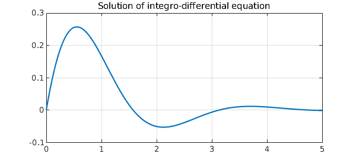

Here, we solve a first order linear integro-differential equation considered in the Wikipedia article [1]:
$$ u'(x) + 2u(x) + 5\int_0^t u(t) dt = 1~ (x\ge 0), ~~ = 0~ (x<0) $$
with $u(0)=0$.
Begin by defining the domain $d$, chebfun variable $x$ and operator $N$.
d = [0 5];
x = chebfun('x',d);
N = chebop(d);
The problem has a single Dirichlet boundary condition at $x=0$.
N.lbc = 0;
Define the operator using Chebfun's overloaded diff and cumsum commands.
N.op = @(u) diff(u) + 2*u + 5*cumsum(u);
Set the right-hand side of the integro-differential equation.
rhs = 1;
Solve the IDE using backslash.
u = N\rhs;
Here is the analytic solution:
u_exact = 0.5*exp(-x).*sin(2*x);
How close is the computed solution to the true solution?
accuracy = norm(u-u_exact)
accuracy =
8.491258814888107e-16
Plot the computed solution
plot(u,'linewidth',1.6), grid on
title('Solution of integro-differential equation','fontsize',16)
